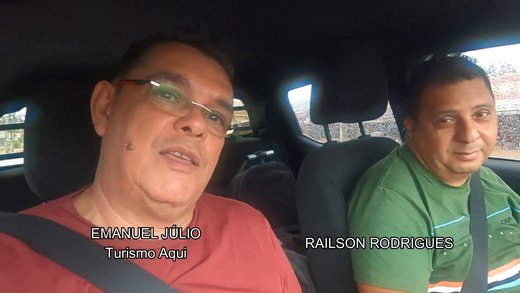

00:00:09.560
Emanuel Júlio e Railson Rodrigues, identificados pelas legendas, aparecem nos bancos da frente do carro na abertura do vídeo.
Novo Repartimento, PA · confirmado
Os dois anunciam a saída pela Transamazônica em direção a Marabá, com uma parada em Itupiranga.
Transcrição · 00:00:00 | 00:00:08 | 00:00:17
Turismo Aqui — quadro de vídeo publicado no YouTube
Referência 1